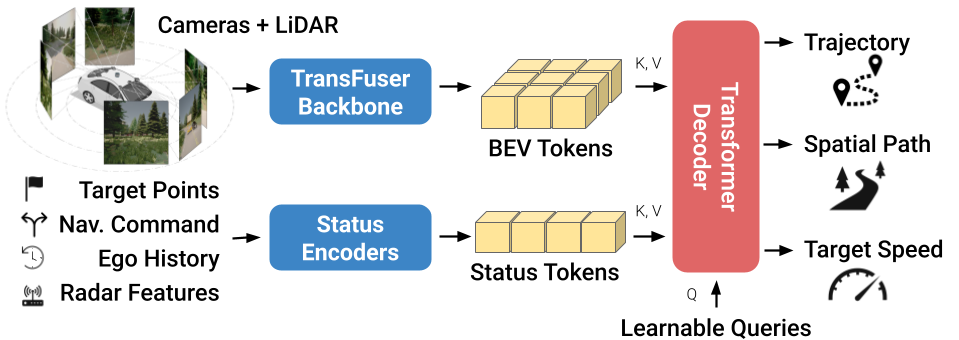

LEAD: Minimizing Learner-Expert Asymmetry in End-to-End Driving (Runner Up, 2025 Waymo Challenge)
Long Nguyen, Micha Fauth, Bernhard Jaeger, Daniel Dauner, Maximilian Igl, Andreas Geiger,
Conference on Computer Vision and Pattern Recognition (CVPR), 2026
Abs / Paper / Supplementary / Poster / Code /
Long Nguyen, Micha Fauth, Bernhard Jaeger, Daniel Dauner, Maximilian Igl, Andreas Geiger,
Conference on Computer Vision and Pattern Recognition (CVPR), 2026
Abs / Paper / Supplementary / Poster / Code /
Bibtex
@inproceedings{Nguyen2026CVPR,
author = {Long Nguyen and Micha Fauth and Bernhard Jaeger and Daniel Dauner and Maximilian Igl and Andreas Geiger and Kashyap Chitta},
title = {LEAD: Minimizing Learner-Expert Asymmetry in End-to-End Driving},
booktitle = {Conference on Computer Vision and Pattern Recognition (CVPR)},
year = {2026},
}